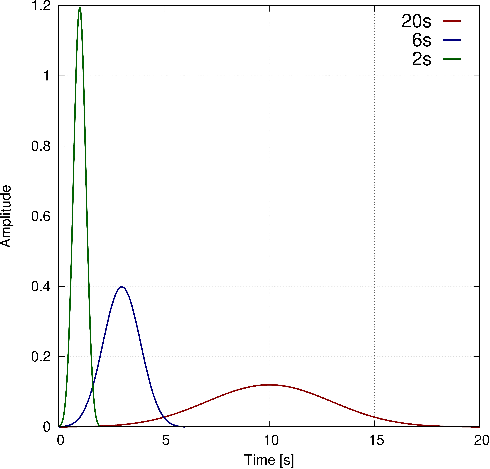
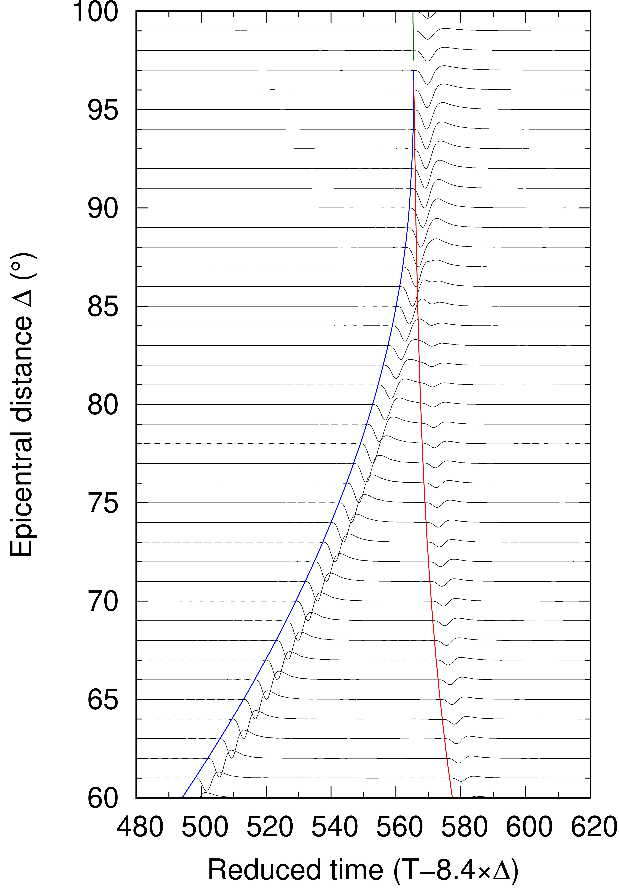
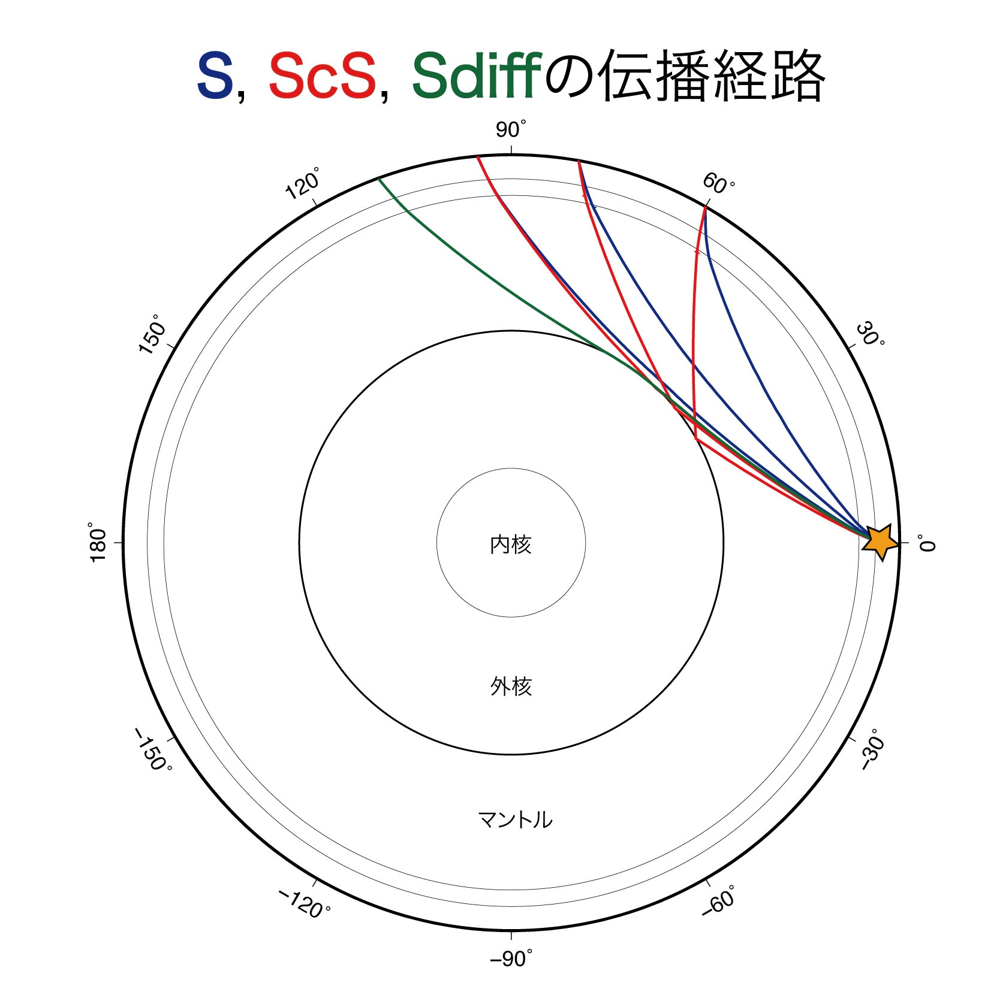

本日の実習内容
実習（予定）
- Record Sectionの作成
- 震源時間関数の畳み込み
- SACで個別の波形を確認
- 畳み込み前後
- 震央距離の違い
- 畳み込んだ震源時間関数をSACでプロットしてみる
- 1成分（Transverse成分）のRecord sectionを作成
実習
Skype会議15:00~
サンプルコードの場所：/mnt/lasagna/suzuki/Ensyu2020/recordSection
0. 理論波形計算
- 第三回の「3. Record section 作成準備」を参考に理論波形計算を実行し、SAC形式に変換しておく.
1. 震源時間関数の畳み込み
- ガウシアン型の震源時間関数を畳み込み. 震源時間関数のファイルは、/mnt/lasagna/suzuki/Ensyu2020/gaussian/gaussian*s.sacを用いる. gaussian*s.sacはSACで読み込み・描画可能なので各自確認してみてください. 以下は例.

- 上記のサンプルコード置き場にあるconvolve.sac及びconvollve.shを理論波形(*.Ts/*.Rs/*.Zs)がある場所にコピーして
sh convolve.sh 6で実行. 引数の6は全幅6秒の震源時間関数の畳み込みを意味する. ガウシアンの全幅は複数あるので、試してみてください.
2. Record Sectionの作成
Transverse成分のみの場合
- /mnt/lasagna/suzuki/Ensyu2020/recordSectionからconvolve.sacとconvolve.shをコピーして実行.
./convolve.sh 6- recordSection.shを作業場所にコピー（spcsac内を想定.）
sh recordSection.sh ./201506231218A/6sec /mnt/lasagna/suzuki/Ensyu2020/ttDataで実行.
その際に
export CLASSPATH="${CLASSPATH}:."
export CLASSPATH="/home/suzuki/Kibrary/bin/kibrary-0.4.8.jar:$CLASSPATH"
を.bash_profileに追記しておくこと.
5. 以下のようなRecord sectionが得られる. 横軸は時間、縦軸は震源からの角距離. ただし、横軸は実時間から見かけ速度分(8.4 deg/s)を差し引いた. 青・赤・緑の線は、それぞれ仮定した地球内部構造（MIASP）に対するS、ScS、Sdiffの理論走時曲線. S、ScS、Sdiffの地球断面図上での伝播経路（波線）は以下の図の通り.


課題
- 上記の通り、複数の震源時間関数（例えばgaussian10s.sac、gaussian4s.sac、gaussian20s.sac...）をの形をSACやGnuplotで描画してみる. またそれらをDSMで計算して理論波形(*.Ts/*.Rs/*.Zs)に畳み込んで波形の違いを観察してみる.
- 上記のサンプルコードの場所にスクリプト 例をアップロードするので、それを用いてRadial成分、Vertical成分のRecord sectionを作成してみてください.
*サンプルコードrecordSection.shをアップデートしました. Radial, Vertical成分のRecord sectionが描画できますので試してみてください. 実行結果の例はこちらこちら.